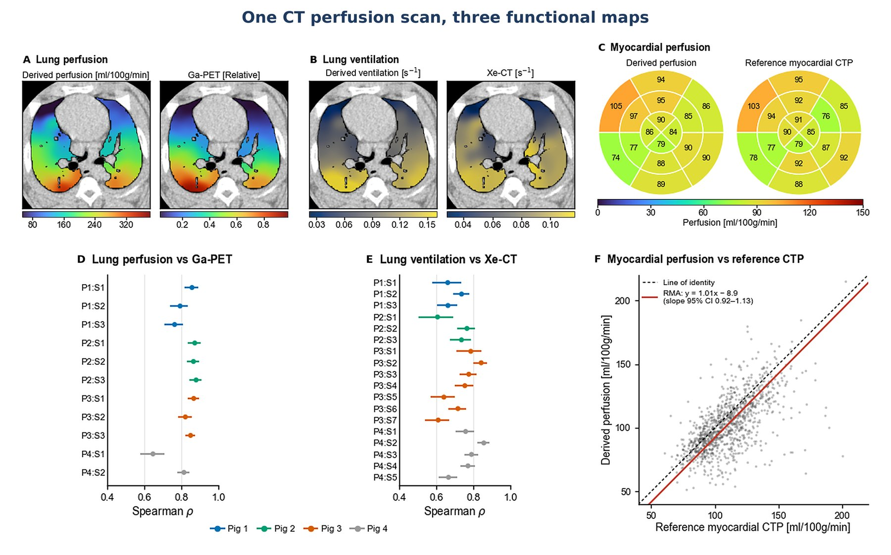

Lung ventilation, lung perfusion and myocardial perfusion from a single dynamic contrast-enhanced CT scan PhD thesis

Full sizeFunctional lung avoidance radiotherapy aims to protect the best-working parts of the lung during lung cancer treatment, and the heart is an equally important organ at risk. Mapping lung ventilation, lung perfusion and heart muscle perfusion would normally take three separate nuclear medicine scans with different tracers.
This project derives all three from a single dynamic contrast-enhanced CT scan acquired in the same session as the radiotherapy planning CT. Deformable registration and tracer-kinetic modelling separate the breathing and blood-flow signals in the lung, and the heart is reconstructed at mid-diastole to measure myocardial perfusion.
Repeated at follow-up, the same scan could also help catch early lung and heart toxicity after treatment.
- Lung ventilation vs. xenon-enhanced CT: pooled Spearman ρ = 0.73 (per-scan 0.61–0.86).
- Lung perfusion vs. 68Ga-MAA PET: pooled ρ = 0.83 (per-scan 0.65–0.88).
- Myocardial perfusion vs. conventional cardiac CT perfusion across the 16 AHA segments: regression slope 1.01 (95% CI 0.92–1.13).